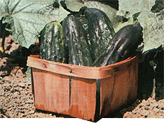
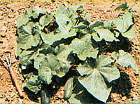

Even if your growing plot is short of space, you'll have room for . . .
Although most folks will agree that crisp summer salads laced with mouthwatering slices of fresh-from-the-garden cucumbers are among the high points of any hot season, many gardeners don't grow the crisp treats. After all (the argument often goes), cucumbers grow on vines that'll gobble up cropping ground faster than a sweet-talking land speculator can name a new development . . . so city people - and even country dwellers with small garden plots - can't afford to grow them, right?
Wrong. Happily, horticultural researchers have been thinking of limited-space gardeners. And, with the introduction of several varieties of "bush" cucumbers, a new world has opened to aspiring growers who have a shortage of gardening area.
Despite their name, such plants don't resemble shrubs. Instead, their compact shape is formed by the growth of extremely short vines that bear a profusion of fullsized fruit. With the foliage of a mature plant measuring only two to three feet across, bush cucumbers are ideally suited to intensive gardening techniques . . . whether in a raised bed or a patio pot.
And just how do you grow the "new" plants? Well, the technique is about the same as that for conventional cucumbers. The key element is to remember that all members of this family are heavy feeders: They need plenty of both organic material and water and do best, therefore, in well-conditioned humus-rich soil ... not too sandy, not too dense.
A well-prepared organic plot will definitely encourage cuke production, by retaining moisture and providing a uniform release of the required nutrients . . . naturally. So work your garden area by tilling in a generous dose of compost and organic fertilizer.
You can start the seeds indoors (or in a cold frame or greenhouse) for an early crop, or simply plant them outdoors after all danger of frost has passed. Don't rush the season though . . . the warmth-loving kernels won't germinate until the subsurface temperature exceeds 50°F.
After the cukes sprout, thin the seedlings to 12 or more inches apart, and cultivate the plot often. Then, once the fledgling plants have become established, mulch heavily. (This last is a must practice . . . as it provides for good moisture retention, slow nutrient release, and weed and insect control.)
To container-grow your saladmakers, fill one or more pots (seven inches or larger) with a rich soil mixture and sow the seed as you would in the ground, thinning to one plant per pot after germination. Then simply guard against the same insect and disease problems that might occur in a garden.
Fortunately, most compact cuke varieties are relatively disease-resistant. However, insects such as the striped or spotted cucumber beetle cause damage - both as chewers and as carriers of bacterial wilt - and must be controlled. To protect your plants, practice the time-tested organic methods of natural soil maintenance, crop rotation, and heavy mulching. In addition, try your most repulsive homebrewed hot pepper and garlic spray on any insects that appear. (Or - as an extreme measure - dust with pyrethrum or rotenone to keep bugs at bay.) With reasonable care and some good fortune, you should harvest an abundance of bright green, slender fruits in about eight weeks.
And when's the best time to pick them? That's up to you. Pluck anything from three-inch luncheon tidbits to eight-inch candidates for the dill crock. (Never let the cukes rot on the vine. Regular harvesting increases production and helps prevent insect and disease problems.)
Give bush cucumbers a try this season . . . whether you're cramped for space or not! Most major seed company catalogs offer at least one of the several varieties available. And whatever specific type you choose, you can count on a lot of good eating from a little area!
|
 The ""compact"" cuke variety will provide you with ample fare for summer salads! |
 |
|